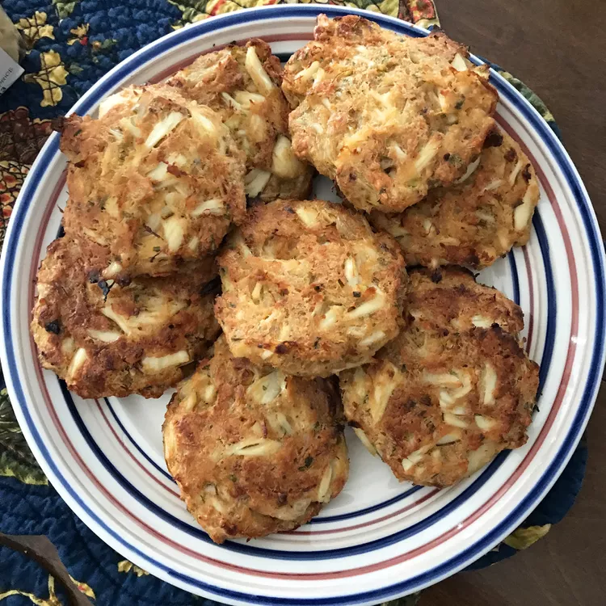

Crab Cakes

Learn how to cook crab cakes with this easy and fast recipe that makes some of the best I've ever eaten! Serve with coarse mustard on the plate or your favorite mustard sauce.
- 1 egg
- 3 tablespoons mayo
- 1 tablespoon minced green onions
- 4 tablespoons lemon juice
- 1 teaspoon dried tarragon
- 1/8 teaspoon red pepper flakes
- 8 ounces crabmeat
- 1/2 cup crushed buttery round crackers
- 1 tablespoon butter
- Whisk together egg, mayonnaise, green onions, lemon juice, tarragon, and pepper flakes in a medium bowl. Gently stir in crabmeat, being careful not to break up meat. Gradually mix in cracker crumbs, adding until desired consistency is achieved. Form crab mixture into 4 patties.
- Heat butter in a skillet over medium heat.
- Cook patties in the skillet until golden brown, 5 to 6 minutes on each side.